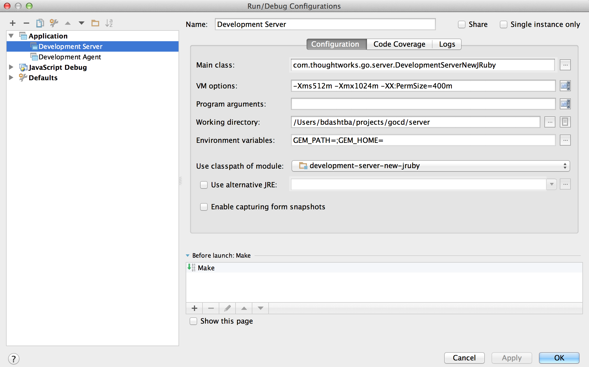

Supported versions: Vagrant 1.4.3+, VirtualBox 4.3.6+
The vagrant environment gives you a VM that has everything configured for Go to build and run. For convenience we have written two versions:
You can use the environment in any one of the following two ways:
This gives you an Ubuntu Box with Gnome, the codebase and an IDE already installed.
Vagrant box (Warning: Size is about 1.2GB)
Download both files and copy them into a (preferably an empty) directory. Running it is as simple as running the following in that directory:
vagrant up
If you choose this option, some parts below are not very relevant to you. You can continue to the section about the development server.
~/projects$ git clone https://github.com/gocd/go-development-environment-setup.git
~/projects$ cd go-development-environment-setup
You can then do either of the following based on the OS your running:
~/projects/go-development-environment-setup$ ./setup.sh
C:/projects/go-development-environment-setup$ setup.bat
~/projects/go-development-environment-setup$ ./setup.gui.sh
C:/projects/go-development-environment-setup$ setup.gui.bat
Note: This version comes with the community edition of intelliJ installed, it opens up the Go project for you (if you don't see the DevelopmentServer configuration, restart intelliJ and check again). For additional details refer to section 2.1.3 & 2.1.4 of this document.
The above is just a one time setup. Once the VM is provisioned for subsequent runs, you can bring up the box by running
~/projects/go-development-environment-setup$ vagrant up
Note: Network IO might be slow when configured to use NAT (default). You could change it to 'Bridged' mode to improve performance. In this mode, it necessitates that a network interface is chosen upon boot. Add the line below in the Vagrantfile to enable 'Bridged' mode:
config.vm.network :public_network
After the provisioning, you should automatically get logged into the ubuntu virtual machine (using Virtualbox) environment.
In the minimal version, you will be dropped into the shell. In the Gnome version, you need to go to a terminal. Go code is checked out into /home/vagrant/go directory.
To get Go up and running do the following:
cd /home/vagrant/go
./bn clean cruise:prepare dist
Once this is complete, you can verify that the setup happened correctly, by navigating into go/target/go-server-version. In case of Go 14.1.0,
cd go/target/go-server-14.1.0
bash server.sh
Access Go server from the host machine by accessing the application at http://localhost:8153 which should bring up the Go dashboard. When running in development mode, the default username is "admin" and password "badger"
Note: At times due to port collision, the Go server might be forwarded to a different port. You should be able to find information about it in the console itself.
Username: vagrant
The vagrant user does not have any password. To set the password use passwd command.
Go requires the following software packages to build
Assuming the codebase is cloned into ~/projects/go, you need to execute the following commands to build Go
~/projects/go$ unset GEM_HOME GEM_PATH
~/projects/go$ ./bn clean cruise:prepare dist
After a successful build, the build artifacts are generated inside a directory named "target" in the working directory. The output directory contains JARs along with the packaged ZIP installer for Go Server and Go Agent.
~/projects/go$ ls target
agent
agent-bootstrapper
...
go-agent-14.1.0
go-server-14.1.0
...
util
If you have IntelliJ IDEA configured, you could optionally use it to build Go.
Prior to build via the IDE, we would have to prepare the working directory by copying the database deltas to the configured location. You can achive this by runnning the below command in the working directory.
~/projects/go$ ./bn clean cruise:prepare
After the preparation phase has succeeded,
When developing using IntelliJ IDEA, it is always convenient to run the Go Server in development mode. Apart from the convenience, you also get
The IDEA Application run-configuration can be setup using the values below:
Name: Development Server
Main Class: com.thoughtworks.go.server.DevelopmentServerNewJRuby
VM options: -Xms512m -Xmx1024m -XX:PermSize=400m
Working directory: <project-directory>/server
Environment variables: GEM_PATH=;GEM_HOME=;
Use classpath of module: development-server-new-jruby
Configuring IntelliJ IDEA run-configuration 
Running Development Server from IntelliJ IDEA
The IDEA Application run-configuration can be setup using the values below:
Name: Development Agent
Main Class: com.thoughtworks.go.agent.DevelopmentAgent
Working directory: <project-directory>/agent
Use classpath of module: development-agent